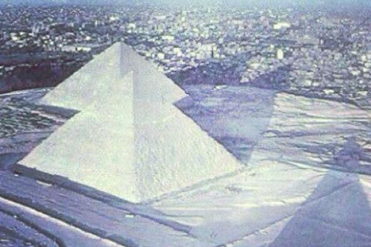
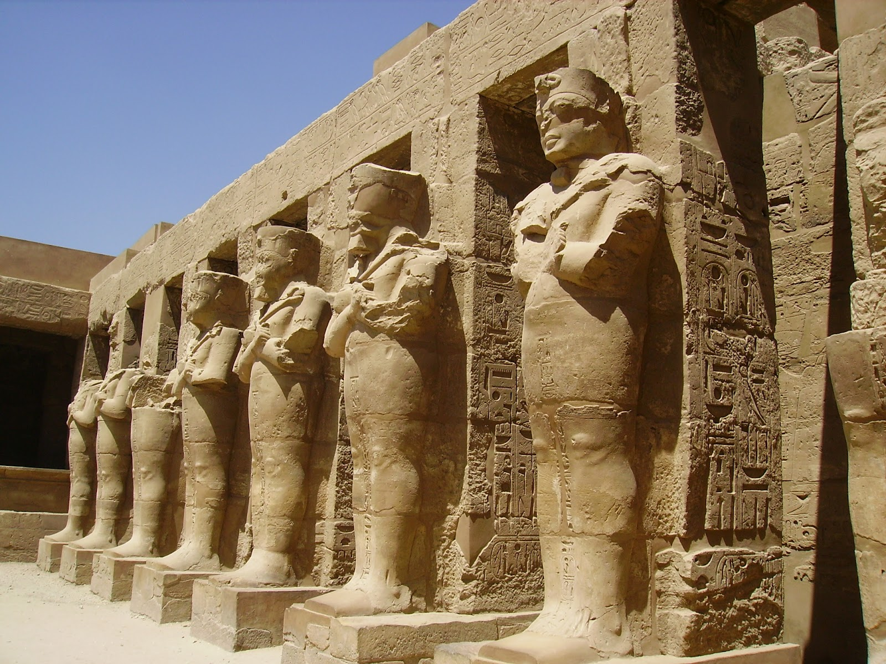
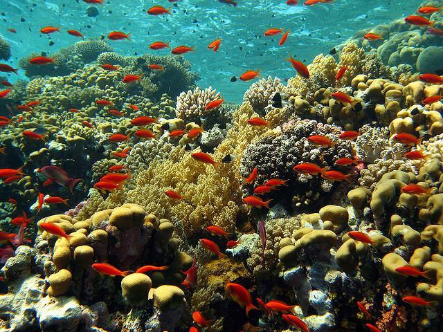
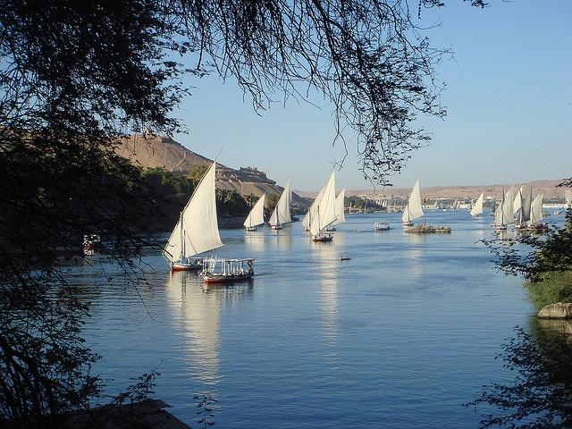
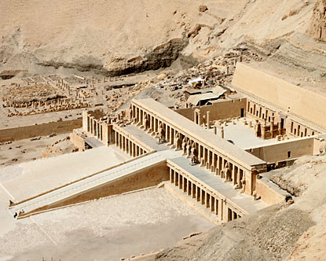
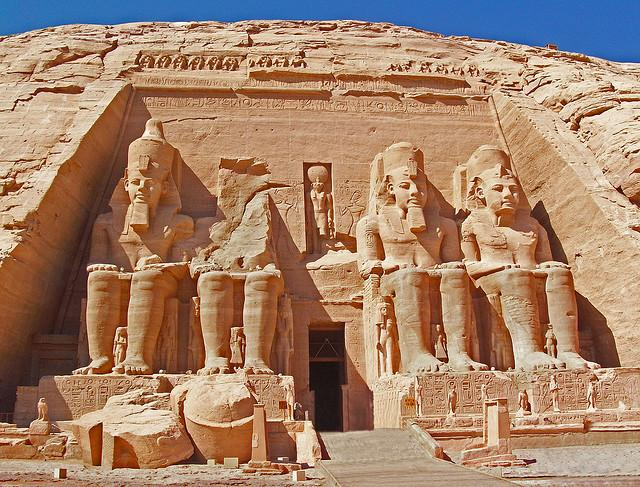

Check out the amazing sights to see while in Egypt!
|

The Pyramids of Giza
The Pyramids of Giza, situated in the immediate vicinity of the southwestern suburbs of Cairo are the undisputable top attractions in Egypt. The pyramids at Giza were built over the span of three generations - by Khufu, his second reigning son Khafre, and Menkaure. The Great Pyramid of Khufu is an awe-inspiring 139 meters (455 feet) high making it the largest pyramid in Egypt, although nearby Khafre's Pyramid appears to be larger as it is build at a higher elevation. And if you go soon, you might catch them still covered in snow! |

The Temple of Karnak
Although badly ruined, few sites in Egypt are more impressive than Karnak. It is the largest ancient religious site ever built, and represents the combined achievement of many generations of Egyptian builders. The Temple of Karnak actually consists of three main temples, smaller enclosed temples, and several outer temples located about 2.5 kilometers north of Luxor. One of most famous structures of Karnak is the Hypostyle Hall, a hall area of 5,000 m2 (50,000 sq ft) with 134 massive columns arranged in 16 rows. |
|

The Red Sea Reef
The Red Sea, off the coast of Egypt, is one of the most beautiful places in the world to go diving. The waters of the Red Sea are renowned for their spectacular visibility and features some of the most exotic seascapes. With its wide expanse of coral formation on the reefs, it is home to thousands of different sea creatures. Red Sea beach resorts are located on both sides of the sea, on the east side and part of the Sinai peninsula is the long established Sharm el Sheikh and its neo-hippy counterpart, Dahab. On the west coast of the Red Sea lies relatively old and touristy Hurghada and a cluster of new resort towns. |

The River Nile Cruise
Cruising the Nile is a popular way of visiting upper Egypt. The Nile River has been Egypt's lifeline since ancient times and there is no better way to trace the passage of Egypt's history than to follow the course of the Nile. Almost all Egyptian cruise ships travel the Luxor-Aswan route which is safe, scenic and terminates at two of Egypt's most important towns. Taking a Felucca down the Nile is an adventurous option. Feluccas are sail boats that have been used on the Nile since antiquity. A Felucca is not quite as comfortable as a luxury cruise ship but nothing can beat sailing in a quiet rig that was designed thousands of years ago. |
|

The Valley of the Kings
The Valley of the Kings near Luxor is a valley where, for a period of nearly 500 years from the 16th to 11th century BC, tombs were constructed for the kings and privileged nobles of the New Kingdom. The valley contains 63 tombs and chambers, ranging in size from a simple pit to a complex tomb with over 120 chambers. The royal tombs are decorated with scenes from Egyptian mythology and give clues to the beliefs and funerary rituals of the period. All of the tombs seem have been opened and robbed in antiquity except for the famous tomb of Tutankhamun. |

Abu Simbel
Abu Simbel is an archaeological site comprising two massive rock-cut temples in southern Egypt on the western bank of Lake Nasser. The twin temples were originally carved out of the mountainside during the reign of Pharaoh Ramesses The Great in the 13th century BC, as a lasting monument to himself and his queen Nefertari. The complex was relocated in its entirety in the 1960s, when the temples were threatened by submersion in Lake Nasser, due to the construction of the Aswan High Dam. Abu Simbel remains one of Egypt's top tourist attractions. |